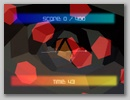
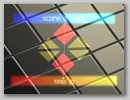

How to play Shape Slasher: Slash shapes into equilateral triangles, Left drag mouse to slash, Right drag mouse to collect shapes for score!

Cutting up our first triangle. See how the red color means they're not yet worth much?
Time to collect our first triangle, it's bright green and worth 177 points because it's nearly equilateral!
When scoring shapes, they sparkle. :) That was something implemented after the weekend for polish.
There are multiple bonus stages! Shapes don't move and it's easy to slash and collect lots of points! How many can you get?
Challenge levels are similar to bonuses, however you MUST score high enough to proceed, and you always start with just one shape.

How will you solve the challenge in the time limit?